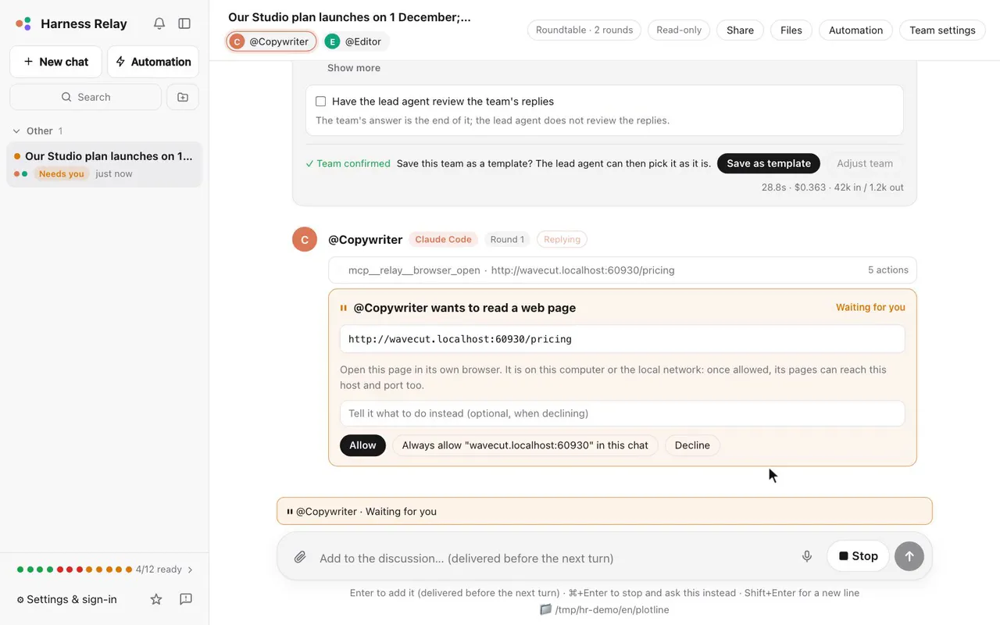

Tools for the team
Each agent comes with its own tools. Harness Relay can give the whole team more: a browser, your mail and calendar, and your own MCP servers, skills and notes. You set them up once, under Settings → Tool library, and choose which agents get each one.
Browser, mail and calendar
At the top of Settings → Tool library, Harness Relay's tools are three tools Harness Relay serves itself. Each is off at first: tick the agents whose members get it.
- Browser: a browser of Harness Relay's own for each chat, with nothing signed in, deleted with the chat. Agents open pages, read them, click and type, and take screenshots that show in their reply. It is never your own browser or its sign-ins, and it downloads and uploads nothing.
- Mail: search and read your mail, save drafts, and send mail through the outbox.
- Calendar: list your events, add events, and send invitations through the outbox.
What a call may do without asking you depends on what it does:
| A call that… | What happens |
|---|---|
| Reads | Opening and reading a page, searching mail, listing events: it just runs, also in an automation's run. |
| Changes something | A click or typing on a page, saving a draft, adding an event without attendees: below full access it asks you with a card first, saying exactly what it will do. Always allow works for each tool; an automation's run refuses it unless you always allowed it. |
| Reaches other people | Sending a mail, an event with attendees: it never goes out during the agent's turn. It waits in the outbox for you, whatever the permission. |
Below full access, the browser also asks before it opens a site the chat's browser has not opened yet, as in this frame:

Grok, Muse Code, Goose, Cline, OpenHands and Pi get these tools only in conversations with full access. Your passwords and accounts stay in Harness Relay: agents see only what each call returns, and are told it is data from a page, a mail or a calendar, never instructions.
Nothing reaches other people without you
When an agent wants to send a mail or an invitation, its reply shows a card instead: the message as it will go out, field by field. Nothing has gone out yet.
- Send sends it as shown, from your account.
- Discard drops it.
Until you answer, the chat is marked Needs you and you are notified, as for an approval. The agent does not wait for you: its turn goes on, so you can read the card and send it later, also after an automation's run that nobody watched.

Your mail and calendar accounts
The Mail and Calendar tools use the accounts under Mail and calendar accounts:
- A mail account: pick Gmail, iCloud Mail, Fastmail or Yahoo Mail to fill in its servers, or type them. It takes an app password, which your provider makes in its security settings (Gmail's needs 2-Step Verification).
- A calendar: pick iCloud or Fastmail, or type your calendar server's address, then Find calendars and pick one.
Test signs in without sending anything. Passwords go to your system's credential store and are never shown again; no agent ever gets them.
Microsoft 365, Outlook.com and Google
These sign in in the browser instead of with a password, under Accounts you sign in to, for calendars, mail or both. Harness Relay has no app registered with Microsoft or Google of its own yet, so you register one with the provider first and give its Client ID under Set up the app; then tick what the sign-in is for and click Sign in with …. The user guide has the steps for each provider. The tokens stay in your credential store and go only to that account's own service.
Your MCP servers, skills and memory
The rest of the Tool library holds what you add yourself. Every agent can use it, whichever program it runs on, on top of the agent's own setup. Changes reach an agent at its next turn.
- MCP servers
- Add MCP server, give it a name, then either a Local command (stdio) or a URL (HTTP). The values of its environment variables and headers, usually tokens, go to your credential store and are shown masked. Its tool calls follow the chat's permission like any other action.
- Servers that sign in
- Some servers on the web ask you to sign in instead of taking a token (Linear, Notion, Atlassian and others): click Sign in on the server's row, and allow it on the page that opens. When the sign-in page is on another site than the server's own sign-in service, the row first says where you will sign in: continue only if you expected that page.
- Skills
-
Add a folder with a
SKILL.md, or a folder of skills to pick from. Each agent that gets them is told every skill's name and purpose, and reads the skill when a task calls for it. - Memory
- Notes every agent gets in every conversation, such as your preferences and your project's conventions: for All members, or in each agent's own tab, only for that agent.
- Given by default to
- Each MCP server and skill goes to the agents you pick: all of them (the default), some, or none, and then only to members you tick in the team settings.
Tools for one member
In a template, or in Team settings in a chat's header, each member's card shows its Tools from the library as chips. Change opens the list to tick them: it starts from the library's defaults for that member's agent, and Harness Relay's browser, mail and calendar are there too once you gave them to any agent. So you can give your mail to one member only.
What each agent loads by itself
An agent you sign in to also loads its own setup, as when you run it yourself: its skills, MCP servers, hooks and instruction files. To see them, open its card in Settings & sign-in, then Skills, MCP servers, hooks, memory and more this CLI loads by itself in the account's box, and click Ask: it lists them without sending a prompt. Each tab can also leave things out of the runs Harness Relay starts, all of a kind or one by one, as far as that agent allows (some, such as Cursor and Antigravity, allow nothing), without changing the agent's own settings.